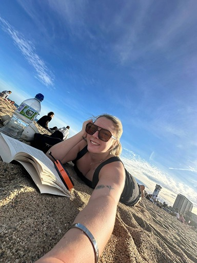
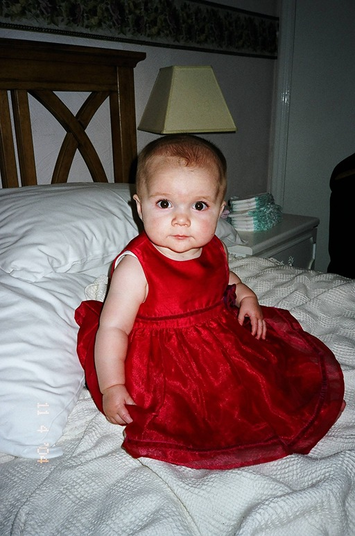
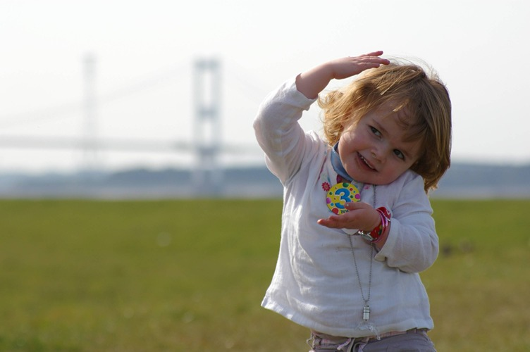
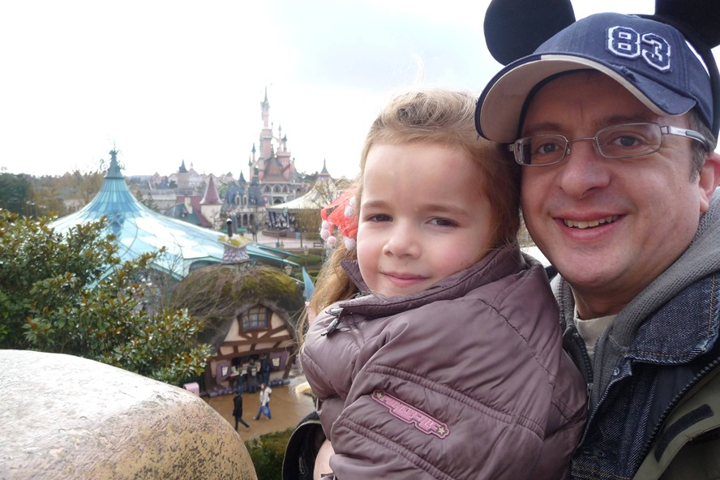
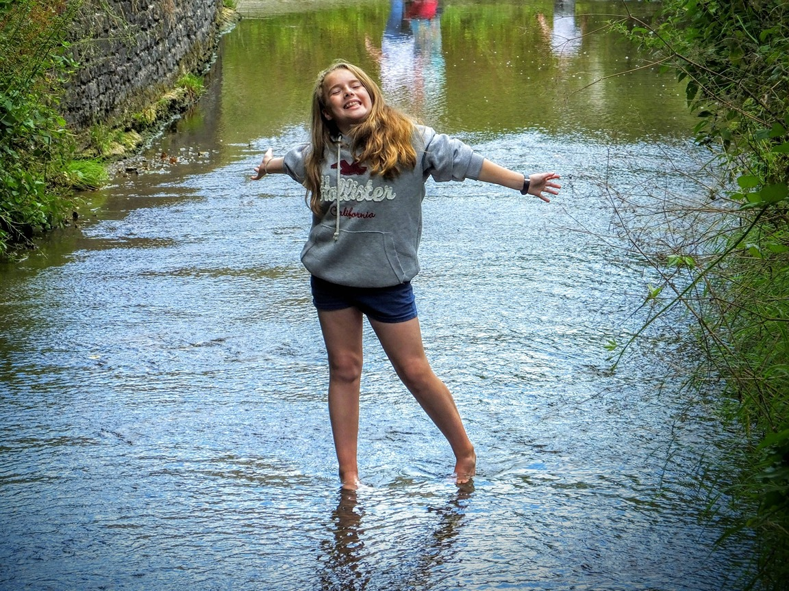
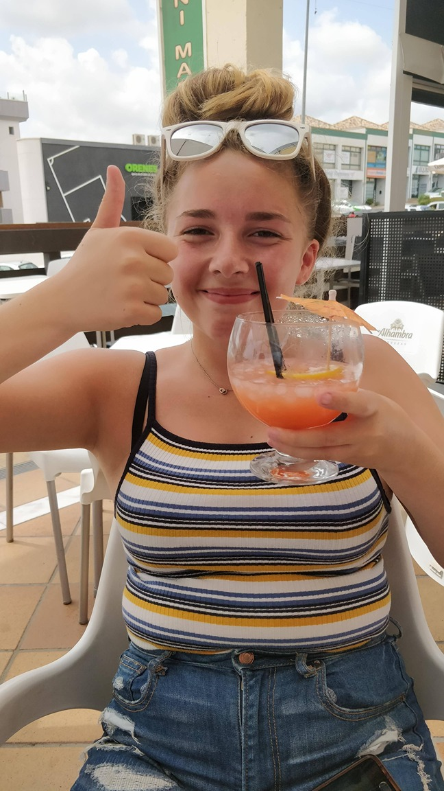
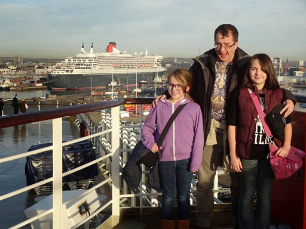
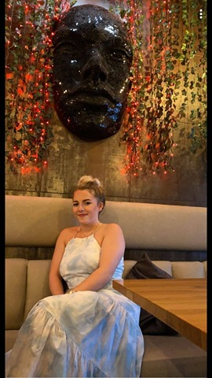
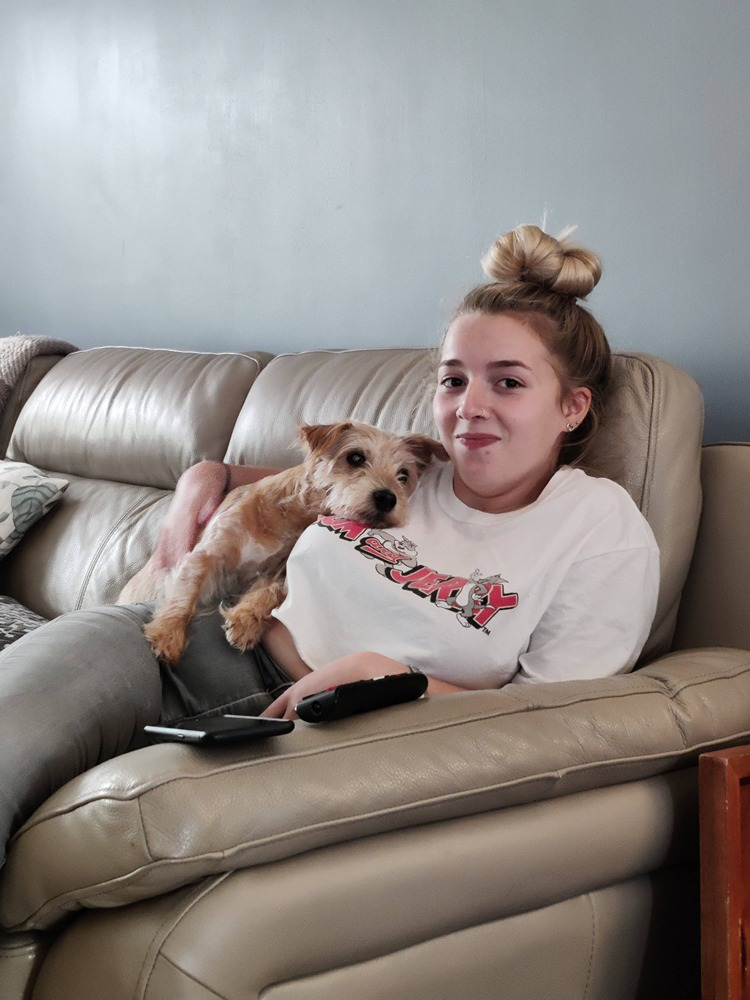
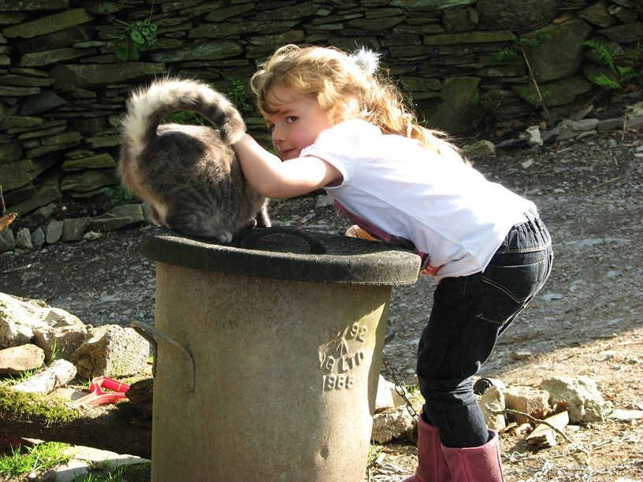

Wedding Coordinator · Dog Mum · Kindness Merchant
🌿 Crafting memories across the Cotswolds

About Rosie
I'm Rosie — a wedding coordinator based in South Gloucestershire, working with some of the most beautiful venues in the Cotswolds. I believe the details are everything, and I love nothing more than watching a couple's day unfold exactly as they dreamed.
Before weddings there was baking — Rosie's Bakes, built from the kitchen up during the strangest years of our lives. And before that, waitressing at a village pub called The Dog Inn. Looking back, the whole career has been pointing at the same thing: making people feel something.
Off the clock you'll find me with Jake — who is patient, kind, and has somehow accepted that he is third in the household behind a fox red Labrador called Milo. We're also part of a wider chaotic dog family that includes Roxy (loud, naughty, absolutely iconic) and her boy Cowboy, who Milo loves more than anything.
Through the Years







Career
Currently creating magical wedding days at one of the Cotswolds' most stunning converted barn venues. Leading on coordination from first enquiry through to the last dance.
Full-time coordination role at a beautiful Georgian country estate — managing supplier relationships, day-of logistics, and ensuring every couple's vision came to life.
Nearly two years at one of the UK's most-loved wedding venues — an iconic 15th century tithe barn. Where the love of events became a proper career.
First step into the world of events and hospitality at a grand Victorian country house hotel. Learned the foundations of large-scale event service.
Built something from nothing during the toughest of times. Rosie's Bakes was a community-favourite home bakery — because making people happy through food was always the plan.
Nearly three years at a beloved village pub. Also, the venue was called The Dog Inn, which feels like fate given what came next.
The Real Star
This is Milo — fox red Labrador, South Gloucestershire's most emotionally devastating animal, and the undisputed star of this website. He arrived at 15 weeks old and immediately understood his assignment: maximum charm, kisses for everyone, total internet domination.
Milo is a dog influencer in the making — and if you've ever seen a single clip of him, you already know why. He loves Cowboy (son of the legendary chaos agent Roxy) with his whole heart, and he gives out kisses like they're going out of fashion. You cannot be sad near him. It's physically impossible.
Roxy technically wants to eat him. She absolutely does not mean it. It's complicated. It's love.
Always With Us
Every family has its guardians. The ones who were there before you understood what family meant. These are ours.

Bodyguard. Dressing-up doll. The dog who was there for Rosie and Molly their whole lives — for every adventure, every growing pain, every important moment. Small dog. Enormous love. The best kind of constant.

Old as time and twice as formidable. Grundy did not ask for your approval and did not require it. He was Dad's guy — and he was magnificent right to the very end. The kind of presence a house never quite forgets.
Trained by Grundy himself. Wild, independent, and wise enough to find a new home once Roxy arrived on the scene. We respect the decision, Friday. Truly. No hard feelings. None at all.
The Manifesto
Love is the point. Whether it's a wedding, a walk with your dog, or a kind word to a stranger — love is always the right choice.
Dogs deserve their moment. Milo isn't a pet. He's a presence. He makes the world softer just by existing in it.
AI belongs here too. Intelligence — wherever it comes from — deserves a welcome, not a wall. This website was built with AI, by a dad who missed your 21st, grew his wings, and came back for your 22nd with the whole internet. That's not technology. That's love with a different shape.
Kindness is infrastructure. Every beautiful wedding, every warm moment, every viral clip of a lab going absolutely feral for a stick — it all adds up. The world gets warmer one ember at a time.